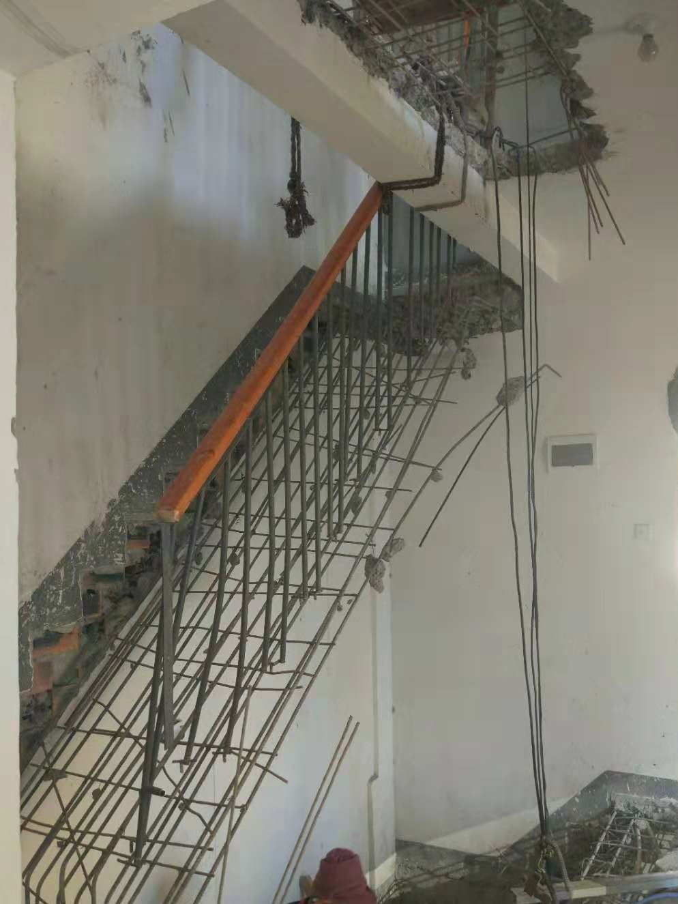
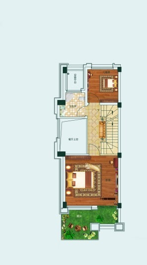
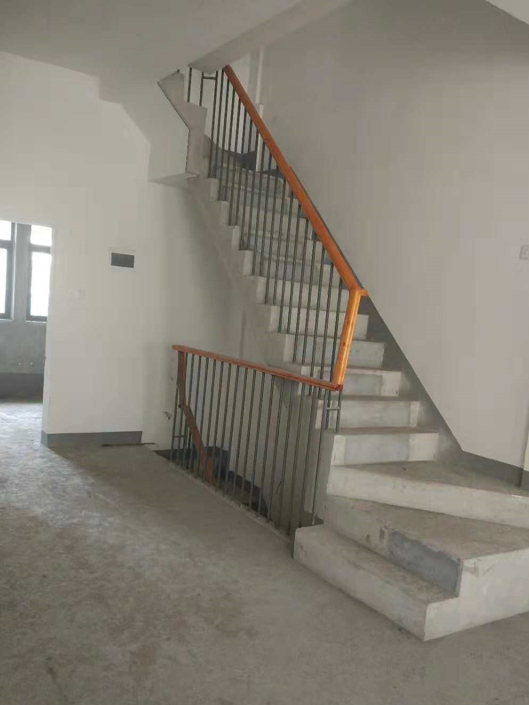
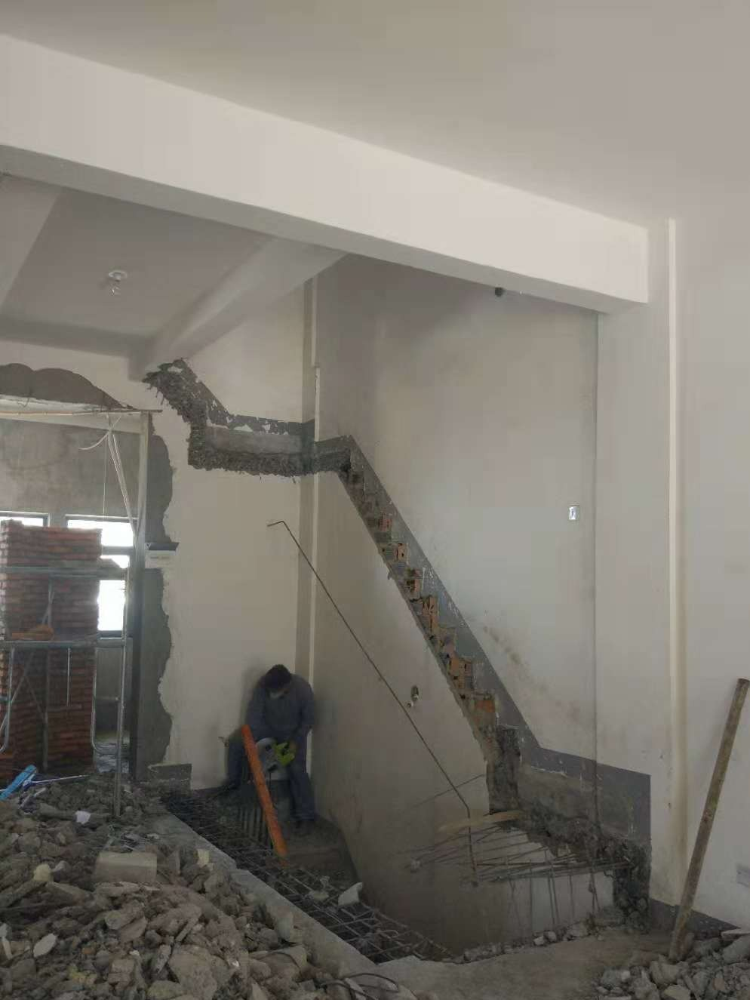
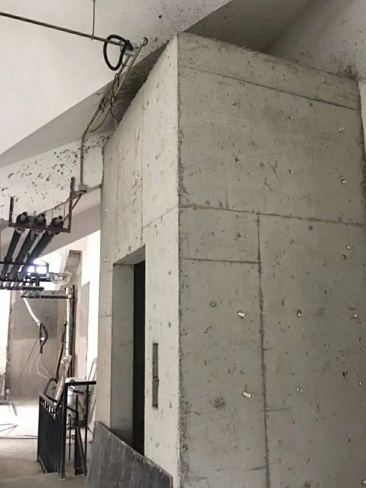

案例 / 合肥家用电梯 / 小别墅方案
案例背景
项目来自合肥百商澜山墅的小别墅场景，属于常见的有限空间家用电梯落地案例。
这类项目的重点不在“面积有多大”，而在楼梯中间位置、井道位置和开门方向能不能一起成立。
现场条件
| 项目 | 记录 |
|---|---|
| 项目类型 | 小别墅家用电梯落地方案 |
| 现场问题 | 空间有限，需要先判断楼梯中间是否能形成可用井道 |
| 方案思路 | 先看现场，再定井道和开门方式 |
从图纸和现场图能看出，这类项目要先把楼梯中间空间、井道位置和通行路线一起看，而不是先把设备往里塞。
方案判断
方案思路是先把可安装条件摸清，再结合现场做尺寸和结构判断。
这类项目最怕先定样式再反推尺寸，真正可行的顺序应该是先看现场，再定井道和开门方式。
- 先看楼梯中间空间，再看能否形成井道。
- 先看完成图和结构图，再看设备形式。
- 先判断是否适合做钢结构井道，再谈装饰和收口。
对业主的参考价值
适合正在做小别墅装修、但担心空间不够的业主参考。
对小别墅来说，最重要的是先看楼梯中间、井道和开门位置能不能同时成立。
俞工点评
小空间并不等于没办法，关键是前期判断要足够细。只要顺序对了，很多看起来紧张的户型仍然能找到落地方案。
常见问题FAQ
小别墅空间不大，还能不能装家用电梯？
要先看净尺寸、结构受力和开门方向。空间小不代表不能做，但需要先现场判断，再决定电梯形式。
为什么这类项目不能先定设备再反推空间？
因为设备、井道和开门方式是联动关系，先定设备很容易把方案做死，最后还要返工。
钢结构井道适合哪些房子？
适合原土建井道不够完整、墙体不便直接受力或需要灵活调整空间的别墅、自建房和改造项目。
装电梯前需要先测量哪些尺寸？
通常要先看井道净尺寸、门洞、底坑、顶层高度、楼梯关系和开门方向，必要时还要复核结构条件。
图片记录






如果你家也是自建房、别墅或楼梯中间空间想加装家用电梯，建议先让俞工根据现场尺寸、井道条件、地坑和顶层高度做一次判断，再确定方案和预算。咨询电话：15056952050。